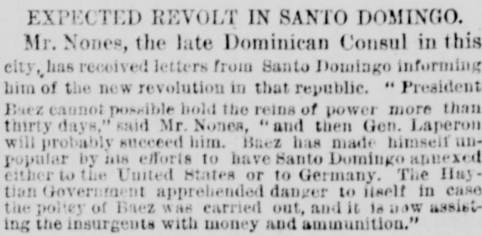
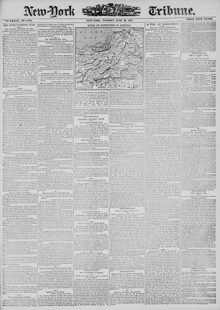

Nones, the late Dominican Consul in this city, has recoived lettersNunez, el anterior Cónsul dominicano en esta ciudad, ha recibido cartas
New-York Tribune. New York [N.Y.], June 26, 1877. Page 1. View the originalVer el original


See the full pageVer la página completaMr. Nones, the late Dominican Consul in New York, said he had received letters from Santo Domingo informing him of a new revolution in that republic. President Baez cannot possibly hold the reins of power more than thirty days, he said, and then Gen. Laperon will probably succeed him. Baez had made himself unpopular by his efforts to have Santo Domingo annexed either to the United States or to Germany, and the Haitian government, apprehending danger if that policy was carried out, was now assisting the insurgents with money and ammunition.El Sr. Nones, hasta hace poco cónsul dominicano en Nueva York, dijo que había recibido cartas de Santo Domingo que le informaban de una nueva revolución en esa república. El presidente Báez no puede mantenerse en el poder más de treinta días, dijo, y entonces probablemente lo sucederá el general Laperon. Báez se había hecho impopular por sus esfuerzos por anexar Santo Domingo a Estados Unidos o a Alemania, y el gobierno haitiano, que temía el peligro si esa política se llevaba a cabo, estaba ahora ayudando a los insurgentes con dinero y municiones.
FULL TEXT:TEXTO COMPLETO:
Mr. Nones, the late Dominican Consul in this city, has received letters from Santo Domingo informing him of the new revolution in that republic. “President Baez cannot possible hold the reins of power more than thirty days,” said Mr. Nones, “and then Gen. Laperon will probably succeed him. Baez has made himself unpopular by his efforts to have Santo Domingo annexed either to the United States or to Germany. The Haytian Government apprehended danger to itself in case the policy of Baez was carried out, and it is now assisting the insurgents with money and ammunition.”El Sr. Nones, el difunto Cónsul dominicano en esta ciudad, ha recibido cartas de Santo Domingo informándole de la nueva revolución en esa república. «El presidente Báez no puede posiblemente mantener las riendas del poder más de treinta días», dijo el Sr. Nones, «y entonces el general Luperón probablemente lo sucederá. Báez se ha hecho impopular por sus esfuerzos para que Santo Domingo sea anexado ya sea a los Estados Unidos o a Alemania. El Gobierno haitiano aprehendía peligro para sí mismo en caso de que la política de Báez se llevara a cabo, y ahora está asistiendo a los insurgentes con dinero y municiones.»